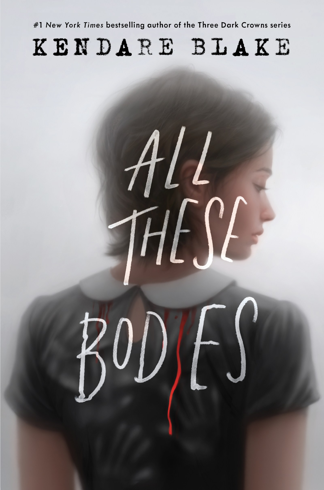

6 Mystery books like 'A Good Girl's Guide To Murder'
Did you enjoy the thrilling emotional roller coster with 'A Good Girl's Guide To Murder'? Well if so, I'm sure you'll enjoy these recs. These books are fantastic if you're looking for something similer! Or if you genrally enyoy thrillers

A good girl's guide to murder is one of the newyork bestseller and one of the most intersting mystery novel out there
If you have already read it than you'de already know how amazing this book is. And if by chance you hav finished all of the books in it's sequel and now you're sadly in a reading slump,
well let me help you by reccmending you some of the other amazing mystery novels that may just end up finding a special place in your.
One Of Us Is Lying
by Karen M. McManus

Pay close attention and you might solve this.
On Monday afternoon, five students at Bayview High walk into detention.
Bronwyn, the brain, is Yale-bound and never breaks a rule.
Addy, the beauty, is the picture-perfect homecoming princess.
Nate, the criminal, is already on probation for dealing.
Cooper, the athlete, is the all-star baseball pitcher.
And Simon, the outcast,... is the creator of Bayview High's notorious gossip app.
Only, Simon never makes it out of that classroom. Before the end of detention Simon's dead.
And according to investigators, his death wasn't an accident. On Monday, he died. But on Tuesday,
he'd planned to post juicy reveals about all four of his high-profile classmates, which makes all
four of them suspects in his murder. Or are they the perfect patsies for a killer who's still on the loose?
Everyone
has secrets, right? What really matters is how far you would go to protect them.
Silent Patient
by Alex Michaelides

Alicia Berenson’s life is seemingly perfect. A famous painter married to an
in-demand fashion photographer, she lives in a grand
house with big windows overlooking a park in one of London’s most desirable areas.
One evening her husband Gabriel returns home late from a fashion shoot,
and Alicia shoots him five times in the face, and then never speaks another word.
... Alicia’s refusal to talk, or give any kind of explanation,
turns a domestic tragedy into something far grander, a mystery
that captures the public imagination and casts Alicia into notoriety.
The price of her art skyrockets, and she, the
silent patient, is hidden away from the tabloids and spotlight at the Grove,
a secure forensic unit in North London.
Theo Faber is a criminal psychotherapist who has waited a
long time for the opportunity to work with Alicia.
His determination to get her to talk and unravel the mystery of why she shot her
husband takes him down a twisting path into his own motivations—a search for the
truth that threatens to consume him....
All These Bodies
by Kendare Blake

Alicia Berenson’s life is seemingly perfect. A famous painter married to an
in-demand fashion photographer, she lives in a grand
house with big windows overlooking a park in one of London’s most desirable areas.
One evening her husband Gabriel returns home late from a fashion shoot,
and Alicia shoots him five times in the face, and then never speaks another word.
... Alicia’s refusal to talk, or give any kind of explanation,
turns a domestic tragedy into something far grander, a mystery
that captures the public imagination and casts Alicia into notoriety.
The price of her art skyrockets, and she, the
silent patient, is hidden away from the tabloids and spotlight at the Grove,
a secure forensic unit in North London.
Theo Faber is a criminal psychotherapist who has waited a
long time for the opportunity to work with Alicia.
His determination to get her to talk and unravel the mystery of why she shot her
husband takes him down a twisting path into his own motivations—a search for the
truth that threatens to consume him....
Ume Laila's Blog
Ume Laila's blog is all about knowledge and a comman hobbby and sharens of love between the same hobbies. Anyone and everyone is welcome to join! Here we talk about our own opinions and view on different books and and share our love for writing and other different hobbies. Welcome to Ume Laila's Blog!

.png)
.png)
.png)